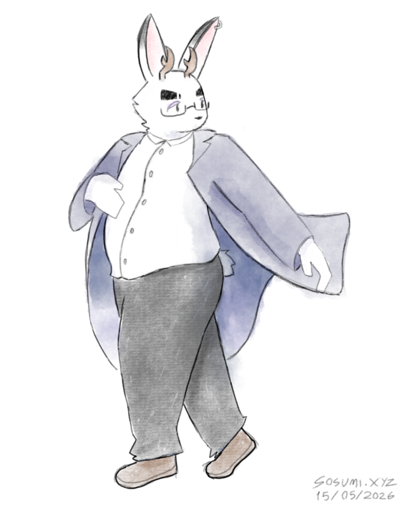

2026

THE POTENTIAL MAN
VAGUEPOSTING IN THE DARK
Before Deltarune Chapter 5 released, everyone was speculating that this would finally be the chapter where IMAGE_FRIEND would get to shine, given the old man described it as "the field of pink and gold" and all that, so when the chapter actually released and his role in it turned out to be... Less than significant, it led to some pretty funny slander posts, which in turn inspired this piece.
This is the first piece of fanart I actually put some semblance of effort into in a good while, even if I did half-ass the background a bit...

Naoki pose practice
A pretty dynamic drawing of Naoki, based on a cool looking pose reference I found on Pinterest, which I've since lost. Oh well...

Kanae and Gatchi
My first fullbody piece made with Krita, featuring my partner's OC Gatchi, and my own Kanae. Looking back at this drawing, the watercolor brush I was using at the time just was NOT it lol